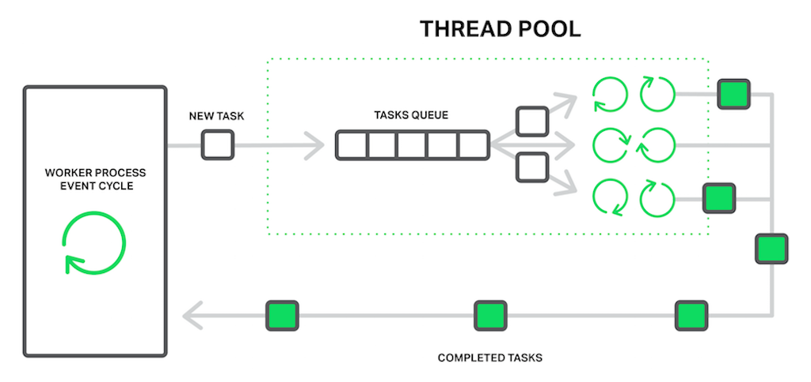

Очередь
Очередь (англ. queue) — это структура данных, добавление и удаление элементов в которой происходит путём операций push и pop соответственно. Притом первым из очереди удаляется элемент, который был помещен туда первым, то есть в очереди реализуется принцип «первым вошел — первым вышел» (англ. first-in, first-out — FIFO). У очереди имеется голова (англ. head) и хвост (англ. tail). Когда элемент ставится в очередь, он занимает место в её хвосте. Из очереди всегда выводится элемент, который находится в ее голове. Очередь поддерживает следующие операции:
- empty — проверка очереди на наличие в ней элементов,
- push (запись в очередь) — операция вставки нового элемента,
- pop (снятие с очереди) — операция удаления нового элемента,
- size — операция получения количества элементов в очереди.

Стек
Стек (от англ. stack — стопка) — структура данных, представляющая из себя упорядоченный набор элементов, в которой добавление новых элементов и удаление существующих производится с одного конца, называемого вершиной стека. Притом первым из стека удаляется элемент, который был помещен туда последним, то есть в стеке реализуется стратегия «последним вошел — первым вышел» (last-in, first-out — LIFO). Примером стека в реальной жизни может являться стопка тарелок: когда мы хотим вытащить тарелку, мы должны снять все тарелки выше. Вернемся к описанию операций стека:
- empty — проверка стека на наличие в нем элементов,
- push (запись в стек) — операция вставки нового элемента,
- pop (снятие со стека) — операция удаления нового
элемента.

Многопоточность
Что такое многопоточность? В многоядерных процессорах или многопроцессорных системах многопоточность осуществляется тем что на разных ядрах или процессорах параллельно исполняются несколько процессов. А вот что касается одноядерного компьютера то мнгопоточность осуществляется путем разделения рабочего времени процессора между процессами. Операционная система по очереди дает на выполнения процессору некоторое количество инструкций от каждого процесса. Получается что в реальности процессы не выполняется одновременно, а только имитируется их одновременное выполнение. Это свойство операционной системы и называется многопоточностю. Многопоточность используется в тех случаях когда параллельное выполнение некоторых задач приводит к боле эффективному использованию ресурсов вычислительной системы. Надо отметить что в многопоточной приложении потоки выполняются в адресном пространстве приложения.
В новом стандарте C++11 многопоточность осуществлен в классе thread, который определен в файле thread.h. Для того чтобы создать новый поток нужно создать объект класса thread и инициализировать передав в конструктор имя функции которая должна выполнятся в потоке. Давайте посмотрим на маленький пример многопоточной программы чтобы все стало понятнее.
#include <iostream>
#include <thread>
#include <chrono>
void thread_func() {
std::this_thread::sleep_for(std::chrono::milliseconds(3000));
std::cout << "I'am a thread func" << std::endl;
}
int main() {
std::thread T(thread_func);
std::cout << "Main thread" << std::endl;
T.join();
return 0;
}
Треды это очень крутой инстумент, который позволяет вам выполнять ваш говнокод параллельно, например если вам нужно перемножать матрицы или перекачать пол тыртырнета. Однако используя треды крайне легко стрельнуть в ногу, например:
#include <iostream>
#include <thread>
#include <vector>
void thread_func(int &a) {
a++;
}
int main() {
std::vector<std::thread> thr;
int a = 0;
for (int i = 0; i < 20000; i++) {
std::thread T(thread_func, std::ref(a));
thr.push_back(std::move(T));
}
for (auto &t:thr) {
t.join();
}
std::cout << a << std::endl;
return 0;
}
pelevin@pelevin-pc ~/P/test_task> ./a.out
19997
pelevin@pelevin-pc ~/P/test_task> ./a.out
19998
pelevin@pelevin-pc ~/P/test_task> ./a.out
19995
pelevin@pelevin-pc ~/P/test_task> ./a.out
20000
pelevin@pelevin-pc ~/P/test_task> ./a.out
20000
pelevin@pelevin-pc ~/P/test_task> ./a.out
19989
pelevin@pelevin-pc ~/P/test_task> ./a.out
19990
А кто это сделал?
Планировщик – это часть менеджера процессов, которая ответственна за переключение между процессами и выбор очереди по какой-либо стратегии.
ОС поддерживает все блоки управления процессом (PCB) в очередях планирования процесса:
- Очередь задач (job queue) поддерживает все процессы в системе.
- Очередь ожидания (ready queue) хранит информацию обо всех процессах, находящихся в основной памяти в состоянии ожидания.
- В эту очередь попадают и новые процессы.
Очереди из устройств (device queue) – это процессы, заблокированные из-за недоступности устройств ввода-вывода.

ОС может использовать разные методы реализации для управления очередями (FIFO, Round Robin, Priority). Планировщик ОС определяет, когда и как перемещать процессы между готовыми и запущенными очередями (могут иметь только одну запись на ядро процессора в системе). На приведенной выше диаграмме он был объединен с процессором.
Модели состояния делятся на активные и неактивные:
- Активные: при создании нового процесса он переходит в класс активных.
- Неактивные: процессы, которые не выполняются, а ждут завершения других процессов. Каждая запись в очереди является указателем на конкретный процесс. Очередь реализуется с использованием связанного списка. Использование диспетчера заключается в следующем: когда процесс прерывается, то переносится в очередь ожидания. Если процесс завершен или отменен – он отменяется вовсе.
Переключение контекста – это механизм сохранения (в PCB) и восстановления контекста процессора с ранее запущенного промежутка времени. При использовании этого метода, коммутатор контекста позволяет использовать один процессор для нескольких действий одновременно. Кстати, контекстное переключение является неотъемлемой частью многозадачной операционной системы.
Когда планировщик переключает процессор с одного процесса на другой, состояние из текущего запущенного процесса сохраняется в блоке управления. Затем состояние для следующего процесса загружается из своего PCB в регистры процессора. Только потом второй процесс может быть запущен.
При переключении следующая информация сохраняется для последующего использования: счетчик программы, информация планировщика, значение регистра базы и лимита, используемый в настоящее время регистр, измененное состояние, информация о состоянии ввода и вывода, учетная информация.
Немного ассемблера
Взглянем на этот милый кусочек кода(да он написан на python, но сути не меняет):
>>> import dis
>>> def f():
... a = 0
... a +=1
...
>>> dis.dis(f)
2 0 LOAD_CONST 1 (0)
2 STORE_FAST 0 (a)
3 4 LOAD_FAST 0 (a)
6 LOAD_CONST 2 (1)
8 INPLACE_ADD
10 STORE_FAST 0 (a)
12 LOAD_CONST 0 (None)
14 RETURN_VALUE
>>>
Произошло следущее:
- Из памяти прочтена константа равная 0
- переменная а записала(присовила эту константу)
- Из памяти прочтена переменная а
- Из памяти прочтена константа равная 1
- Произошла замена констант (был прочтен 0, затем к нему была прибавлена константа)
- Переменная а перезаписалась в памяти
То есть каждый поток должен выполнить 4 шага, чтобы инкремнировать переменную. Если поток уснет на шаге 3, а другой поток инкремнирует переменную, то первый поток при чтении значении переменной получит не 1, а 0 (так как он загрузил из памяти переменную тогда, когда ее значение было равно 0) => заменит ее на 1 и перезапишет в памяти.
Блокировки
Для того, чтобы потоки не могли получаться доступ к одному объекту одновременно пограмистами были придуманы блокировки. Идея простая: когда один поток работает с объектом, все остальные ждут пока он закончит. В С++ блокировки представлены в виде пакета mutex. Вот как блокировка решает нашу проблему (ну почти).
#include <iostream>
#include <thread>
#include <vector>
#include <mutex>
std::mutex m;
void thread_func(int &a) {
m.lock();
a++;
m.unlock();
}
int main() {
std::vector<std::thread> thr;
int a = 0;
for (int i = 0; i < 25000; i++) {
std::thread T(thread_func, std::ref(a));
thr.push_back(std::move(T));
}
for (auto &t:thr) {
t.join();
}
std::cout << a << std::endl;
return 0;
}
А много ли потоков можно создать?
Создать можно довольно много потоков, кол-во потоков зависит от ограничений ОС. Однако существует более важная проблема: для создания потока нужна память, а также память нужна если в поток какие-то данные обрабатываются: например счиатется какая-то тяжеловесная по памяти задача.
Пул потоков
Что такое пул потоков? В жизни мы очень часто встречаемся с организацией пула. Например, когда вы идете в столовую, вы встречаетесь с пулом подносов. Да-да, не смейтесь. Подносы организованы в пул (попробуйте объяснить это поварам :) ); клиентов может быть намного меньше, чем подносов, и наоборот. Когда подносов много, они лежат без дела, когда подносов мало, клиенты ждут, пока они освободятся. Число подносов, то есть размер пула, заранее определяется так, чтобы в большинстве случаев клиенты не ждали подносов. Однако случаются часы пик, когда клиентов очень много. Просто нереально выделить отдельный поднос каждому клиенту, да и не нужно это. Клиент все равно будет стоять в очереди к кассе, так что траты на подносы не принесут реальных выгод. Это, конечно, очень далекая и несовершенная аналогия, но она показывает, что в природе и жизни пул чего-либо очень часто используется как наиэффективнейшая схема обслуживания запросов.
Рассмотрим механизм работы пула потоков. Имеется главный поток приложения, прослушивающий клиентские задачи. Пул потоков создается заранее или при поступлении первой задачи. Минимальный размер пула обычно выбирается равным 1, однако это непринципиально. При поступлении задачи главный поток выбирает поток из пула и передает ему задачу. Если количество потоков в пуле достигло максимума, задача помещается в очередь. Если количество потоков меньше максимального, и все они заняты обработкой, создается новый поток, который получает клиентскую задачу на обработку. Если количество потоков равно максимальному и все потоки занимаются обработкой, то есть активны, задача ставится в очередь и ждет освобождения одного из потоков. Алгоритмы добавления потоков в пул и определения оптимального размера пула сильно зависят от решаемой задачи.

ДомЭшка
Пусть вам в очередь задач приходят структуры в которой есть : функция которую нужно посчитать, и количество памяти к ней (в Mb). Ваша задача написать класс Thread_Pool(), который при инициализации должен принимать два параметра - максимальное количество памяти и максимальное количество потоков которых можно создать. Ваш пул потоков должен обрабатывать те задачи которые кидаются в общую очередь, если задач нет, то нужно ждать пока не придет задача или пока главный поток не завершится. Не забывайте, что вам нужно будет считать какие задача вы можете обработать сразу, а какие нет, так если например в очереди лежит задача на выходе весом в 600Mb, а ваши потоки уже обрабатывают задач общим весом 500Mb, то вам нужно будет подождать пока вы не освободиться достаточное кол-во памяти.